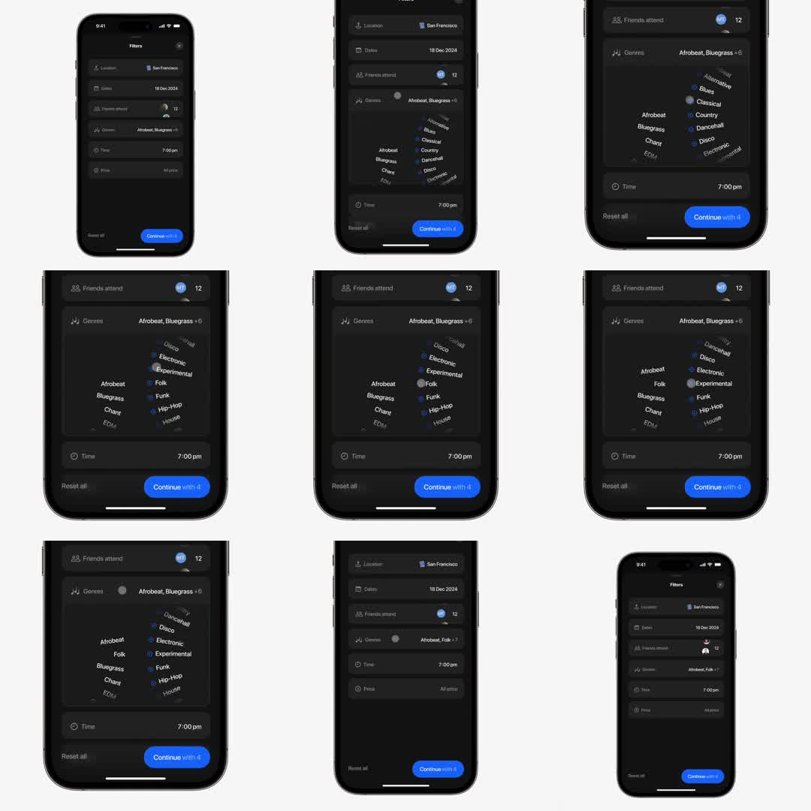

iOS dark filters sheet where the Genres row expands in place into a rotary wheel: genre names arranged along a curved arc that spin under the finger, checked genres get blue dots, and the footer button live-updates 'Continue with N'; the wheel collapses back into the row.

Build a rotary genre picker inside a filter sheet. Dark sheet with standard rows; tapping Genres animates the row's container height (spring, 350ms) to reveal a 220px wheel viewport. Genres are absolutely positioned on a circular arc: each label's angle = index * step + scrollOffset; project with x = R*sin(a), y = R*(1-cos(a)) and rotate the label to the tangent; opacity = cos(a) clamped, blur beyond +-50deg. Drag vertical updates scrollOffset 1:1; on release apply flick velocity with exponential friction (v *= 0.95/frame) and no snapping - free spin. Tap a label to toggle: blue check dot pops in (scale 0->1 spring 150ms) and the row summary + CTA count recompute. Collapse: height springs back, wheel crossfades to the one-line summary. Haptics: light tick each time a label crosses center.